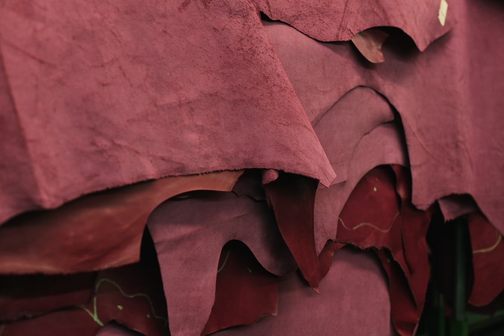
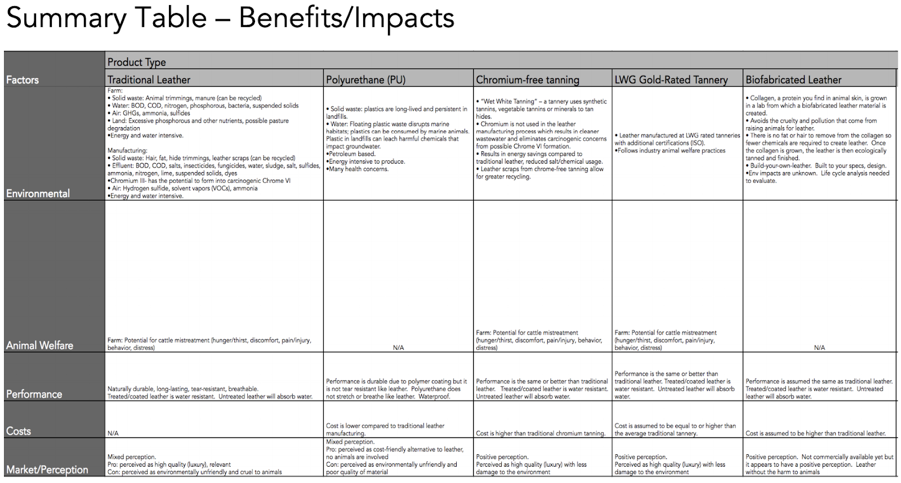
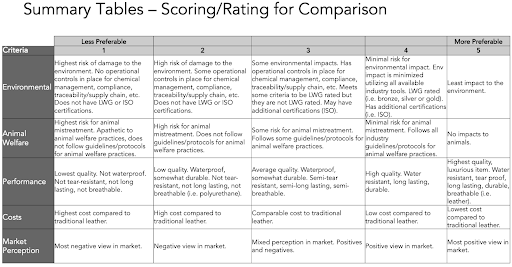
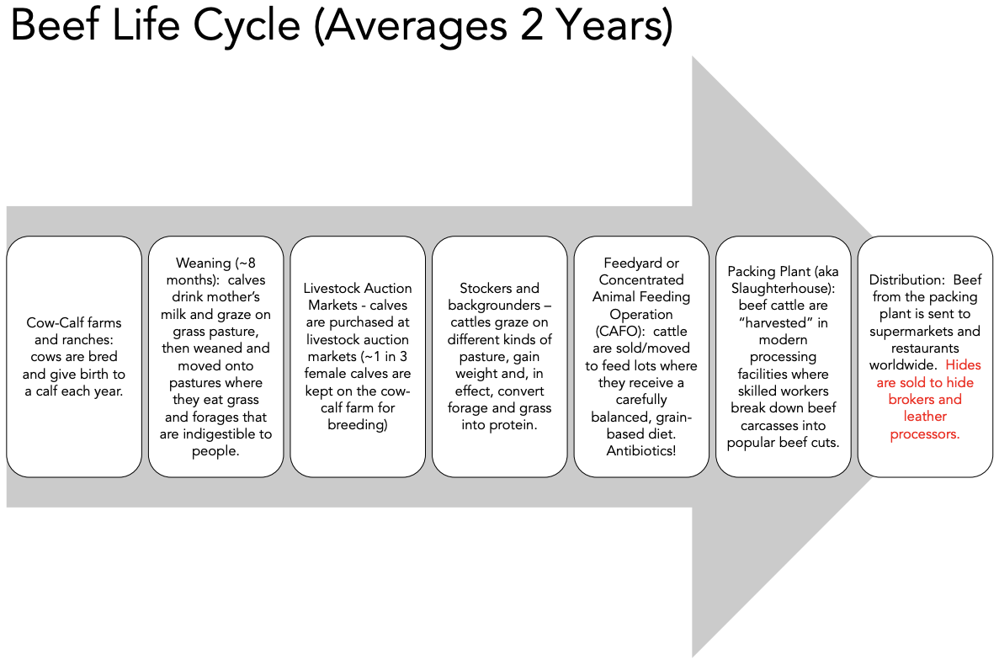
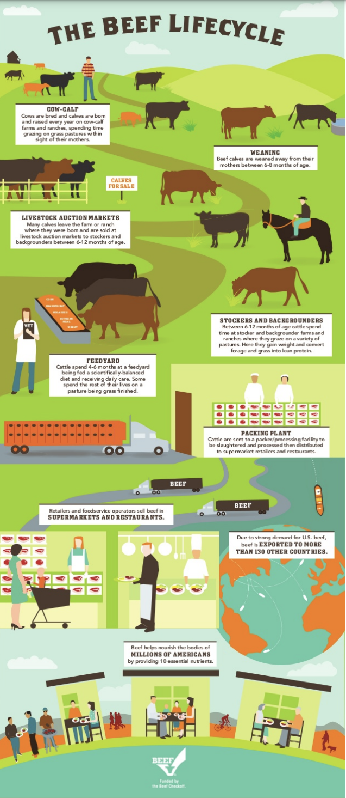

Definition

“Traditional leather” is defined as:
- Grain-fed cattle raised on feedlots
- Processed in a tannery that uses standard chemicals (i.e. chromium for tanning) and does not have any environmental certifications (i.e. not LWG-rated, no ISO systems in place)
- Cost - $3-12 per square foot (varies widely by grain, thickness)
“Chrome-Free” (or “Vegetable Tanned”) Leather is called “Wet White” (vs. ”Wet Blue”) – when a tannery uses synthetic tannins, vegetable tannins or minerals to tan hide.
“Olive Green Leather” uses olive leaves to tan leather.
“Recycled Leather” is made from a combination of leather scraps (from leather industry, not post consumer) and synthetic materials.
Supply Chain Overview
Traditional Leather
Environmental Impacts:
Leather is the hide of a dead animal and is, by nature, intended to decompose. To prevent decomposing, it is treated with chemicals, including hexavalent chromium salts, aniline, azo dyes, lead, cyanide, formaldehyde, tannins, solvents, formaldehyde, and chlorophenols, that pollute the land, air, and water supply.
- At a global scale, the UN Food and Agriculture Organization has estimated that livestock accounts for about 14.5 percent of anthropogenic greenhouse gas emissions.
- PETA claims it takes 2500 gallons of water to produce 1 lb of beef.
Farm impacts
- Solid waste: Animal trimmings, manure
- Water Pollution: BOD, COD, nitrogen, phosphorous, bacteria, suspended solids
- Air: greenhouse gases, ammonia, sulfides
- Land: Excessive phosphorous and other nutrients, possible pasture degradation
- Water and Energy Intensive • Note: hide sales account for only 5-10% of profits from a meat packing plant (i.e., animals aren’t slaughtered for leather, rather it is by-product or subsidy)
Production impacts
- Solid waste: Hair, fat, hide trimmings, leather scraps (can be recycled)
- Effluent: BOD, COD, salts, insecticides, fungicides, water, sludge, salt, sulfides, ammonia, nitrogen, lime, suspended solids, dyes
- Chromium III- has the potential to form into carcinogenic Chrome VI
- Air: Hydrogen sulfide, solvent vapors (VOCs), ammonia
- Water and Energy Intensive
Chrome-Free (Vegetable Tanned) Leather
“Wet White” (vs. ”Wet Blue”) – a tannery uses synthetic tannins, vegetable tannins or minerals to tan hide
Environmental Benefits
- Chromium III is substituted with other tannins, results in cleaner wastewater and eliminates carcinogenic concerns from possible chromium VI formation
- Results in energy savings compared to traditional leather, reduced salt/chemical usage
- Leather scraps from chrome-free tanning allow for greater recycling Performance and Costs
- Performance is the same or better than traditional leather
- Not as flexible § Appearance – not as uniform or vibrant, has a patina
- Cost is higher than traditional chromium tanning (~20% because of time to produce (~20% premium)
US Tanneries
- Wickett & Craig (PA) - http://wickett-craig.com/
- Horween (IL), not exclusively chrome-free - https://www.horween.com/
- Hermann Oak (MO) - http://www.hermannoakleather.com/
- Green Hides EcoLife™ (NC) - http://www.greenhides.com/ecolife.html
Wet-green® or Olive Green Leather
“Wet Green” (vs. ”Wet Blue” or “Wet White) – uses olive leaves to tan leather
Environmental Benefits
- Tanned in Europe on south German hides
- Rated GOLD by the Leather Working Group (LWG)
- Wet-green® technology achieves mineral-free tanning
- Created from fallen and pruned olive leaves from the Mediterranean region that have been collected and processed in compliance with socially sustainable standards and wages for adult workers.
- Cradle to cradle™ GOLD certification § PLATINUM Material Health Rating § requires less water and energy to produce
Performance and Costs
- Performance is the same or better than traditional leather
- No information, but assumed to be on par with “premium leather”
US Suppliers
Moore & Gilles (VA) - https://www.mooreandgiles.com/leather/olive-green-leather/
- Aspen - $23.50/sf, approximate hide size, 50sf
- Terra - $17.00/sf, approximate hide size, 50sf
Recycled Leather
Leather made from a combination of leather scraps (from leather industry, not post consumer) and synthetic materials
Environmental Benefits
- Uses leather off-cuts that would otherwise end up in landfill
- physically interlinks the fibres without the use of adhesives.
- state of the art techniques which close loop recycles 95% of the process water, and converts its own waste streams into energy which is fed back into the process.
- clean technology product produced using sustainable natural leather fibres and produces an 80% smaller carbon footprint than traditional leather manufacturing.
Animal Welfare Benefits
- Product offsets virgin leather products so less hides needed; however, piggy-backs off leather industry Performance and Costs
- Performance claims - equal to that of traditional leather in terms of weight, durability, and appearance
- Less than traditional leather
Suppliers:
- E-Leather (UK), http://www.eleathergroup.com/
Leather from Hides Sourced from Grass Fed Beef Supply Chain
Environmental Benefits
- Raising cattle for beef organically on grass, in contrast to fattening confined cattle on concentrated feed, may emit 40% less GHGs and consume 85% less energy than conventionally produced beef.
Animal Welfare Benefits
- Cattle are ruminants and designed to eat grass and forage.
- Grass fed beef supply chain does not employ the use of feedlots, where thousands of cattle are confined together and reared to slaughter weight on vast dirt feedlots with no access to pasture or growing green vegetation.
- Certifications - Certified Grassfed by AGW guarantees food products come from animals fed a 100 percent grass and forage diet, raised outdoors on pasture or range, and managed according to the highest welfare and environmental standards on an independent family farm.
Performance and Costs
- Performance – should be comparable to traditional leather after processing
- More than traditional leather, because of the niche nature
Suppliers
- No mainstream suppliers, most hides from grass fed beef producers are intermixed with traditional beef industry hides. Goods are available from some grass fed beef farms (e.g. White Oak Pastures), but not direct leather sales.
Recent & Relevant News
Legal Issues & Major Controversies
Mapping the Supply Chain
Supplier Engagement Model
Governance
Animal Welfare: Although hides are a subsidy of the beef industry (30 Million cattle/year in the US), people associate animal cruelty with both meat and leather products. There is potential for cattle mistreatment.
Fundamental principles and standards regarding animal welfare that are widely accepted within the leather industry:
1. USDA Animal Welfare Act (1966)
- The Animal Welfare Act (AWA) requires that minimum standards of care and treatment be provided for certain animals bred for commercial sale.
2. UK Farm Animal Welfare Council Five Freedoms (1965)
- Freedom from Hunger and Thirst: by ready access to fresh water and a diet to maintain full health and vigor
- Freedom from Discomfort: by providing an appropriate environment including shelter and a comfortable resting area
- Freedom from Pain, Injury or Disease: by prevention or rapid diagnosis and treatment
- Freedom to Express Normal Behavior: by providing sufficient space, proper facilities and company of the animal’s own kind
- Freedom from Fear and Distress: by ensuring conditions and treatment which avoid mental suffering
3. Many voluntary industry standards and certification have been developed:
- Animal Welfare Approved - food label for meat and dairy products that come from farm animals raised to the highest animal welfare and environmental standards.
- Global Animal Partnership - 5-Step Animal Welfare Rating Program was developed with the animal’s welfare as the primary focus
Leather Working Group
The Leather Working Group (LWG) is made up of member brands, retailers, product manufacturers, leather manufacturers, chemical suppliers and technical experts that have worked together to develop a environmental stewardship protocol specifically for the leather manufacturing industry.
Objectives:
- Maintain a protocol that assesses the environmental compliance and performance capabilities of leather manufacturers and promotes sustainable and appropriate environmental business practices within the leather industry.
- Improve the leather manufacturing industry by creating alignment on environmental priorities, bringing visibility to best practices and providing suggested guidelines for
- Continual improvement.
- Work transparently, involving brands, suppliers, retailers, leading technical experts within the leather industry, NGOs and other stakeholder organizations.
Benchmarks
- US Gold Certified by Leather Working Group – JBS and Tyson.
- Prime Asia Dongguan – Gold Certified
- ECCO – no info, need to research tannery operations entity
See attached benchmarking images for benefits and impacts of different types of leathers.


Monitoring
Verification
Reporting
Life Cycle Assessments

See infographics on the beef life cycle attached.

Other Challenges & Impacts
Innovations
Natural Leather Alternatives
Green attributes include:
- Avoids hazardous ingredients
- Low emissions
- Biobased and sustainably sourced
- Responsible corporate practices
- Information transparency
Mushroom Leather
The company Bolt Threads introduced a new mycelium-based leather (mushroom). Named, “MycoWorks, the material is grown in New York by biomaterials company Ecovative. The process is similar to running a mushroom farm, with mycelium cells grown in stalks of corn. Unlike animal leather, the material is not dyed with chemicals and is instead dyed with tea.
Cork Leather
Cork is the bark of the cork oak, removed every nine years, when the tree is in a more active stage of growth and it’s easier to peel it without damaging the trunk. The work is done by specialized professionals able to delicately manage an ax.
Environment Impacts
- Renewable resource
- Forestry Stewardship Council (FSC) Certified
- Every time a cork oak tree is harvested, it absorbs more CO2 to aid the bark’s regeneration process Animal Welfare Benefits
- “Cruelty free” and Vegan
- PETA-Approved
Performance and Costs
- Easily cleaned and long lasting
- Durable as leather, versatile as fabric
- Waterproof and stain resistant § Dust, dirt, and grease repellent
- ~$12 per square foot (likely much less in bulk)
Suppliers
- Jelinek (Czech company with US-based distribution) - http://www.jelinek.com/
Pineapple Leather
Non-woven textile called Piñatex™ made from pineapple leaves fibers
Environmental Impacts
- Piñatex™ is a by-product of the pineapple harvest (Philippines), thus no extra water, fertilizers or pesticides are required to produce Piñatex
- The fibres are extracted from the leaves during a process called decortication, which is done at the plantation by the farming community and by-product can be further converted into organic fertilizer or bio-gas
- Less toxic chemicals used
Animal and Plant Welfare Benefits
- “Cruelty free” and Vegan
- No pineapples are harmed in the making of Piñatex
Performance and Costs
- Piñatex™ is strong, versatile, breathable, soft, light, flexible, and can be easily printed on, stitched and cut.
- Assumed to be the same or more expensive than leather
Suppliers
- Piñatex™ (UK) - http://www.ananas-anam.com/pinatex/
Bio-Fabricated Leather
Leather “grown” in a lab. Collagen, the same natural protein found in animal skin, is grown from living cells, assembled into a sheet material, and then finished in a simplified tanning process
Environmental Impacts
- No need to remove fat or hair so stages of tanning that have serious environmental impacts are bypassed
- Less water, less energy, less chemicals.
Animal Welfare Benefits
- Animal free Performance and Costs
- Performance reported to be the same or better than leather
Suppliers
- Modern Meadow (leather grown from collagen in a lab) - http://www.modernmeadow.com/
Other Alternatives
Glazed Cotton or Coated Cotton Canvas
- High quality polished cotton. Adds luster and smoothness to the surface of the fabric.
- Strong resemblance to genuine leather. It's also water-resistant and requires minimal care
- Supply chain – many products available (e.g., Urban Junket) but sources unclear
Fish Leather
- Utilized a by-product of the edible fish industry that used to be dumped back into the sea with a potential to pollute surrounding waters. Not “cruelty free” or Vegan.
- Remarkably strong
- Competes with exotic leathers, so anticipated to be more $$ than leather
- Suppliers – Fish Leather Company (UK), http://thefishleather.co/
Many more…
• Stone
• Tree Bark
• Recycled Rubber
Synthetic and Hybrid Alternatives to Leather:
Polyurethane (PU)
Polyurethane is the more modern and slightly less damaging plastic used for “vegan leather” than its PVC predecessor, which Greenpeace described as “single most environmentally damaging type of plastic
Environmental Impacts
- Solid waste: plastics are long-lived and persistent in landfills.
- Water: Floating plastic waste disrupts marine habitats; plastics can be consumed by marine animals.
- Plastic in landfills can leach harmful chemicals that impact groundwater.
- Petroleum based à high carbon footprint (producing 1 lb. of PU generates more ghg emissions than burning a gallon of gas)
- Energy intensive to produce with many health concerns.
Animal Welfare Benefits § “Cruelty free” and Vegan
Performance and Costs
- Durable due to polymer coating but it is not tear resistant like leather
- Does not stretch or breathe like leather, but is waterproof
- Considerably less $$ than traditional leather
Suppliers
- Of note, Brentano's \"Jetset\" is a polyurethane is part-recycled material and is also degradable, solvent-free, and requires a third of the energy of conventional PU production - http://www.brentanofabrics.com/fabrics/details.aspx?fabID=3913-06
Eco-Suede (Guppy Interior)
Ultra microfiber textile made from recycled polyester.
Environmental Impacts
- Production process is similar to that used for paper recycling, in which no harmful chemical substances are used.
- The recycled polyester used is derived from polyester fibers (Tshirts, fibres, etc.) and PET (bottles, plastic, etc.).
- Recycling polyester means reducing energy consumption and CO2 emissions into the atmosphere by 80% compared to the traditional petrol-based polyester production process.
Animal Welfare Benefits
- “Cruelty free” and Vegan
Performance and Costs
- Breathable and easy to clean
- Unknown, but assumed to be more $$ than microfiber from virgin materials
Suppliers
- Dinamica (Italy) - http://www.dinamicamiko.com/en/dinamica/#null
Bioplastic and Bio-Based Leathers
Natural + Chemical Polymer Composites
Environmental Impacts
- Renewable resources (bamboo, corn)
- Petroleum free
- Can be fully biodegradable
Animal Welfare Benefits
- “Cruelty free” and Vegan
Performance and Costs
- Durable due to chemical polymers
- Waterproof
- Likely less $$ or comparable to leather, but doesn’t seem like a comparable alternative
Suppliers
- US Bioplastics (Florida) - http://www.usbioplastics.com/
- biothane (Ohio) - https://www.biothane.us/
- Green Dot Bioplastics - http://www.greendotbioplastics.com/
- DuPont Tate Lyle BioProducts (London) - http://www.duponttateandlyle.com/susterra